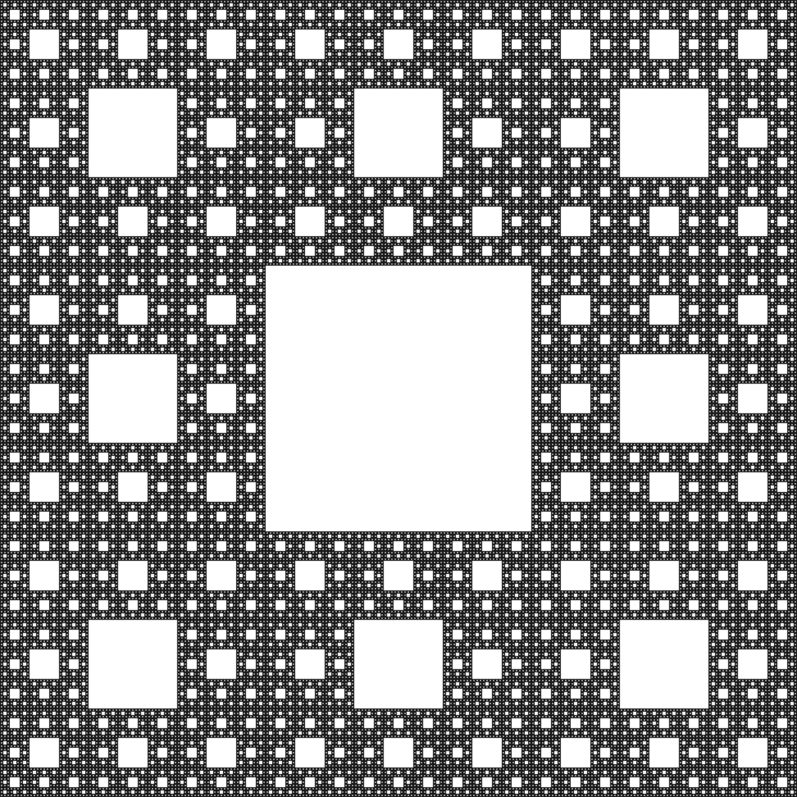

These are a type of mathamatical complex geo shape that goes on infinetly.
Some famous examples of these are:
- Mandelbrot set
- Sierpinski carpet & triangle
- Menger sponge
Some naturally occurring "fractals" include crystals, romanesco broccoili and ferns!

Some fractals, such as the Sierpinski carpet and triangle occupy roughly 1.7 dimensions!
This means that while they appear to be 2 dimensional, they actually occupy less space because (while they do take up two dimensions) their lines are actually full of empty space, making them have less area than a triangle, but more than a line. Pretty cool!
The icons seperating each paragraph are the Sierpinski triangle and carpet and a snowflake (natural fractal-ish).